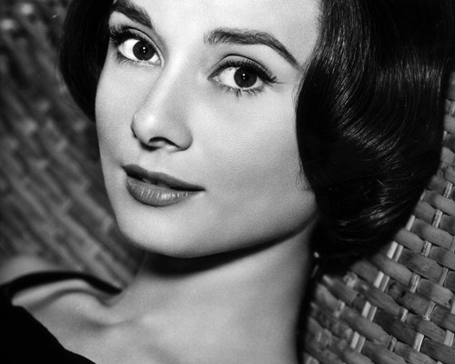

Audrey Hepburn Biography
Actress and humanitarian Audrey Hepburn, star of 'Breakfast at Tiffany's,' remains one of Hollywood's greatest style icons and one of the world's most successful actresses.

January 20, 1993- She died at her home in Tolochenaz, Switzerland after a battle with colon cancer.
Audrey Hepburn is most beautiful actresses in the Hollywood
Audrey Hepburn's life:
- May 4th 1929 -She was born in Brussels, Belgium
- In 1948 - Hepburn made her stage debut as a chorus girl in the musical High Button Shoes in London.
- In 1949 - She was a chorus girl in Sauce Tartare small parts of movie
- In 1950 - She was moved to a featured player in Sauce Piquante
- In 1951- Hepburn made her feature film debut one Wild Oat, in an uncredited role.
- At the age of 22 - She went to New York to star in the Broadway production of Gigi, based on the book by the French writer Colette.
- In 1953- Only two years later, she took the world by storm in the film Roman Holiday with Gregory Peck. Audiences and critics alike were wowed by her portrayal of Princess Ann, the royal who escapes the constrictions of her title for a short time. She won an Academy Award for Best Actress for this performance.
- In 1954 - She won the 'Tony Award' for Best Actress in a Play for her performance.
- September 25th,1954-Hepburn and Ferrer got married on Hepburn and Ferrer got married on in Switzerland.
- In 1957 - Hepburn earned an 'Academy Award' nomination for her work on this bittersweet romantic comedy. Showcasing her dancing abilities, Hepburn starred opposite Fred Astaire in the musical Funny Face
- In 1959 - She played Sister Luke in The Nun's Story, which earned her an 'Academy Award' nomination.
- In 1960 - her first child, a son named Sean, was born in England
- In 1961 - Returning to her glamorous roots, Hepburn set new fashion standards as Holly Golightly in Breakfast at Tiffany's, which was based on a novella by Truman Capote
- In 1964 - she went through one of the most famous metamorphoses of all time.
- In 1969 - She married Italian psychiatrist Andrea Dotti
- In 1970 - She had a son, named Luca was born he was beutiful
- In 1980 - She became a goodwill ambassador for UNICEF. Traveling the world, Hepburn tried to raise awareness about children in need. She understood too well what it was like to go hungry from her days in the Netherlands during the German Occupation. Making more than 50 trips, Hepburn visited UNICEF projects in Asia, Africa and Central and South America.
- In 1992 - She won a special Academy Award for her humanitarian work
"The most important thing is enjoy your life-to be happy-it's all that matters"
Audrey Hepbun
if you would like to know about that most famous beautiful, incredible human being on her Wikipedia entry